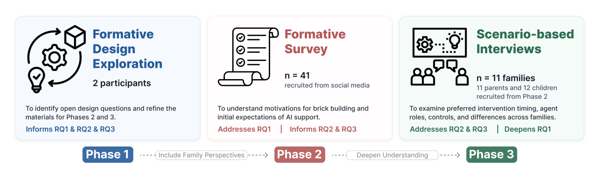
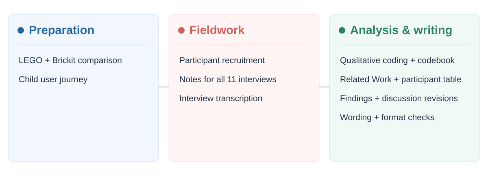
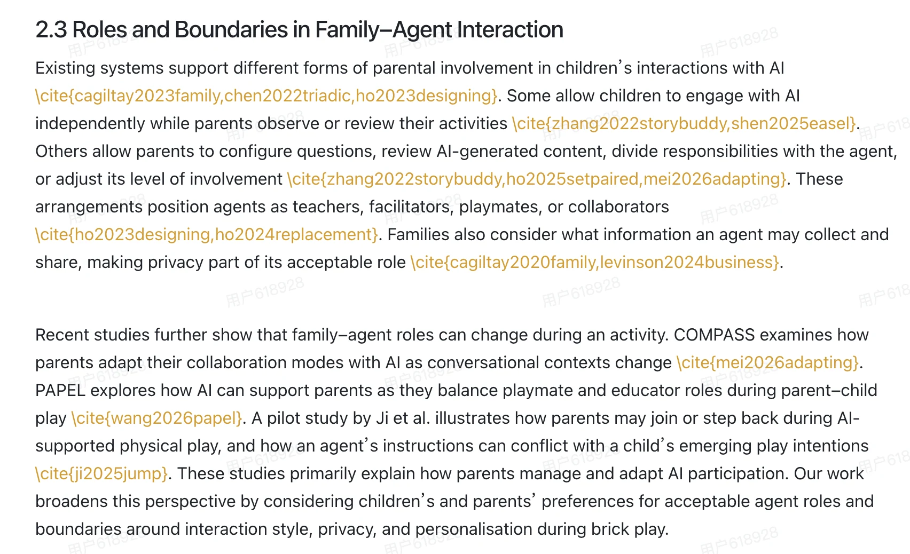
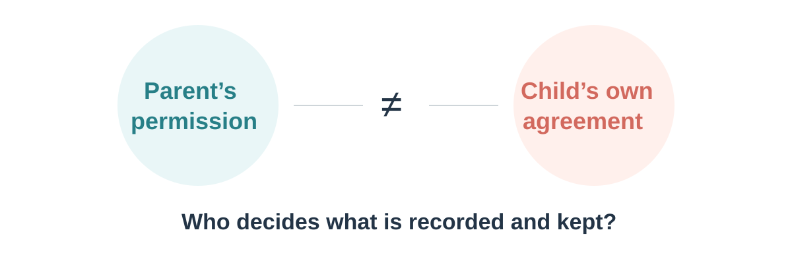

Background
When is help welcome?
We studied when families want AI to help during brick play, when it should stay quiet, and who should control its role and recording.
Study approach
The team’s research process.


My work
From research preparation to the paper.


Research preparation and analysis


We compared our coding of the first three family interviews to develop the shared codebook.


A question I raised
Whose decision is it?


Outcome
Connecting evidence to a research argument.
This was my first formal research project. I learned to compare coding decisions, trace themes back to interview evidence, and build an argument through related work and discussion.